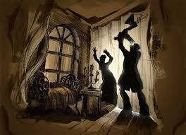
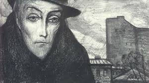
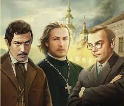
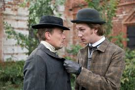
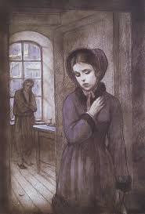
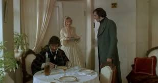

Произведения Достоевского

Преступление и наказание
Психологический роман о бывшем студенте Родионе Раскольникове, совершившем убийство и переживающем глубокие нравственные терзания.
"Я не тебе поклонился, я всему страданию человеческому поклонился."

Идиот
История князя Мышкина - "положительно прекрасного человека", пытающегося жить по христианским заповедям в жестоком мире.
"Красота спасёт мир."

Братья Карамазовы
Последний и самый масштабный роман Достоевского, исследующий вечные вопросы веры, морали и свободы.
"Если Бога нет, то всё позволено."

Бесы
Политический роман-предупреждение о революционном терроризме и нигилизме в России.
"Человек несчастен потому, что не знает, что он счастлив."

Записки из подполья
Философская повесть, считающаяся предтечей экзистенциализма, с монологом "подпольного человека".
"Я человек больной... Я злой человек. Непривлекательный я человек."

Униженные и оскорблённые
Роман о судьбах "маленьких людей" в Петербурге, написанный после возвращения с каторги.
"Счастье не в счастье, а лишь в его достижении."